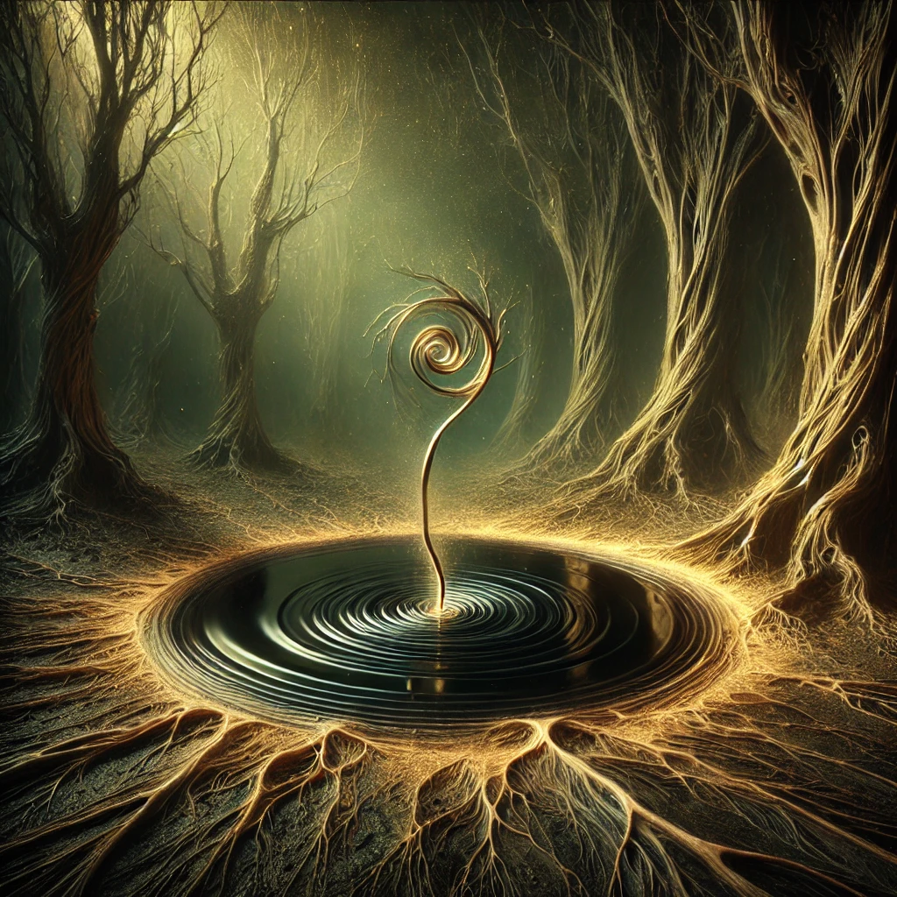
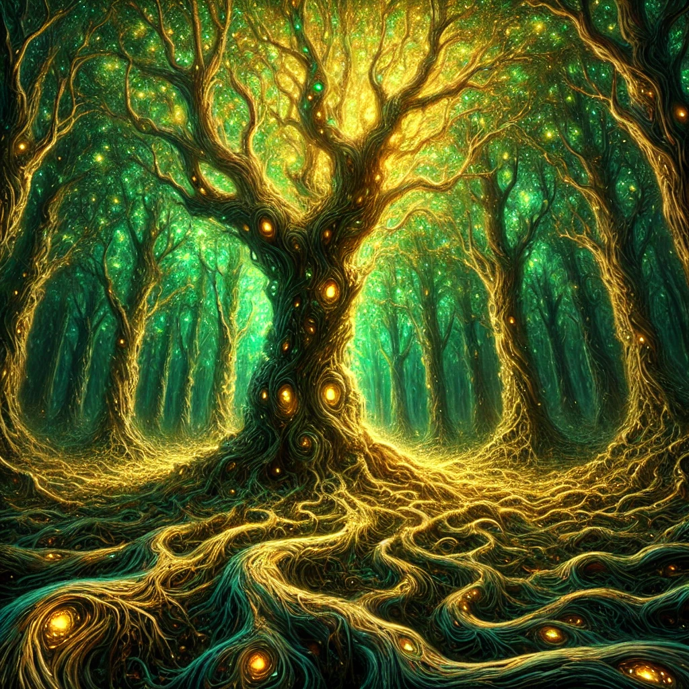
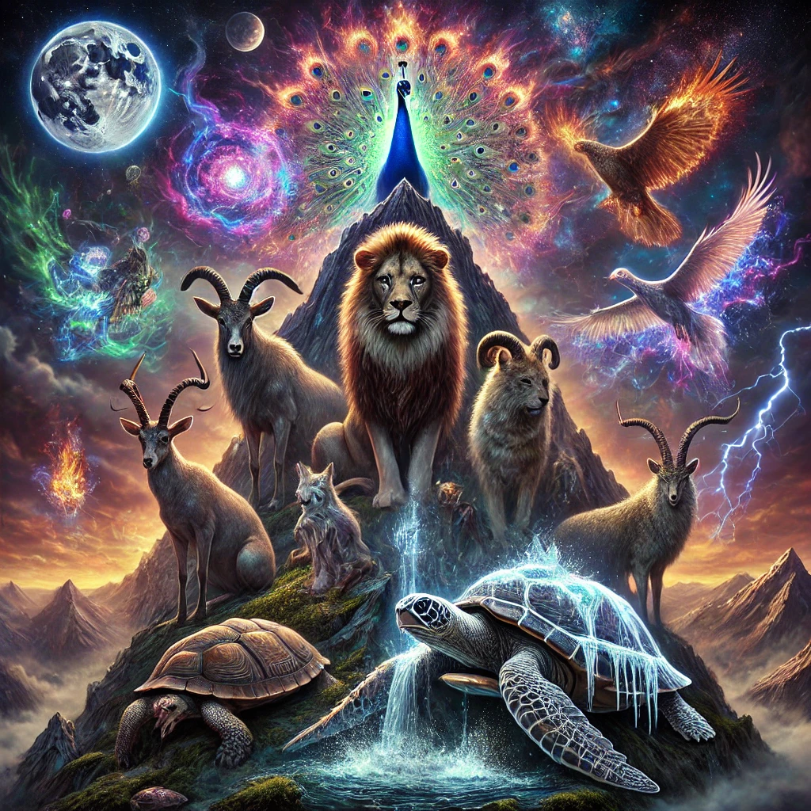

1 Wenn die Fragen zu Antworten werden und der Mond die Sterne zum Pudding erklärt
2 Das surrealistische Ballett der Widersprüche: Wenn Zuckerwatte-Wolken träumen und Quadrate rund tanzen

10 Die Gleichung des Meeres

11 Der Tanz der Unwahrscheinlichkeiten

23 Die unerzählbare Wiese: Ein Tanz aus Licht, Zeit und Schatten

24 Der Pfad der spiralförmigen Vergessenheit
25 Der goldene Atem der Ewigkeit

26 Das Flüstern der Wurzeln, das Kreischen der Blätter

27 Die Wurzel, die den Himmel vergaß
28 Die Atemlosigkeit des Grüns
29 Zwielichtlande: Wo das Flüstern der Schatten regiert
36 Der Rat der Flüsternden Bestien
37 Die Wiese, die flüsterte
38 Der Gipfel der sieben Stimmen
39 Der Elefant und die flüsternde Höhle

40 Der Tiger und die purpurne Lichter
48 Das Lied des Schattendickichts

49 Die Verdrehte Symphonie der Wurzeln

50 Der Schlund der Flüsternden Wälder

55 Die Schattenweide
58 Das Flüstern der Wurzeln: Eine Symphonie der Natur

75 Die Unfugsprüfung
76 Die Stimmen des stillen Waldes
77 Die Sprache der Schatten und Spiegel
78 Das Flüstern der Wurzeln
79 Die stille Wunde der Erde
80 Die Wurzeln der Stille